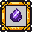

Oriel
示例页
example.html
首页
控件
图标
示例
关于
Oriel 示例页
1.20.1 Forge
这一页只用 HTML + CSS 写成，没有一行 Java；交互由引擎自动接线。
再打开一次：
/oriel example
或
/oriel open oriel:ui/example.html
按钮 · Button
五个变体，全部带点击波纹 m-ripple
主要行动
确认
次要
删除
普通
禁用
带图标
大号按钮
输入 · Input
文本框支持中文输入法内联预编辑
文本
下拉
高画质
高画质
均衡
流畅
开关
点一下试试
滑条
进度 · Progress
ore-progress 有默认 / gold / red / blue 四色
分段
计数
已加载配方
0
标签与分段 · Tabs
.ore-tabs 选中类 selected，.o-seg 选中类 on
视频
音频
控制
全部
武器
食物
可点标签
已选中
物品与格子 · Item
<item id="minecraft:..."> 直接渲染真实物品
槽位
浮层 · Overlay
气泡框 data-pop、右键菜单 data-context、抽屉 .o-drawer
打开气泡
显示
只显示附魔
隐藏空格
全部
武器
方块
在这里点右键
重命名
F2
复制
Ctrl+C
删除
统计
史诗
3
点右边的手柄折叠
卡片 · Tile
.o-tile 加 .hot 可点，加 .sel 呈选中态
锻造台
熔炉
炼药锅
伤害
12
耐久
1561 / 1561
附魔
锋利 V
怎么接着写
页面放在哪
src/main/resources/assets/oriel/ui/<名字>.html
URL 就是 oriel:ui/<名字>.html
需要 Java 吗
不用。<html data-oriel-shell> 就够。
要逻辑再注册 PageControllers。
去看完整控件目录
回首页
关闭这一页